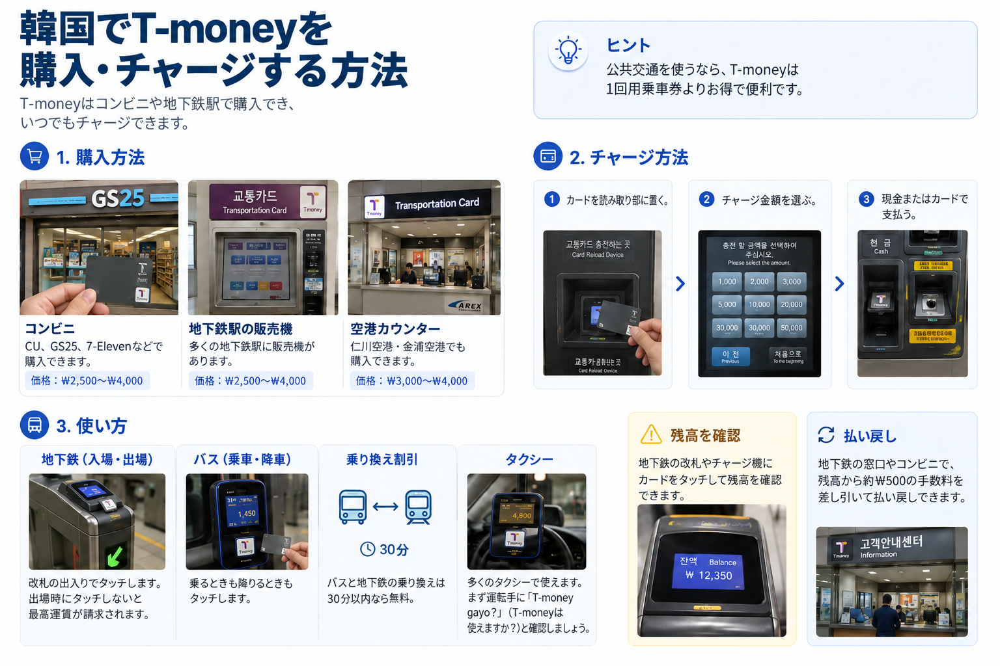
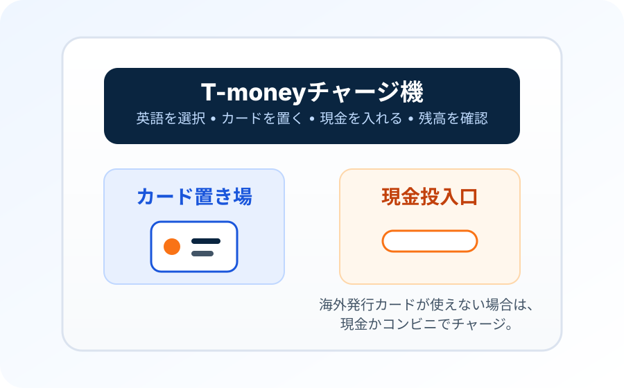

「カードは買ったのに、地下鉄改札で残高がないと言われる」
カード本体を買うことと、乗車用の残高を入れることは別です。チャージ機または対応コンビニへ持って行き、韓国ウォンを入れてからもう一度改札を使ってください。
多くの旅行者は、韓国の交通決済システム全体を理解する必要はありません。空港からの移動が終わり、市内の通常移動が始まったときに、きちんと使える手段が一つあれば十分です。カード型T-moneyは今でもその役割をよく果たします。韓国ウォンをチャージし、改札やバスの端末にタッチして、韓国の広い公共交通ネットワークで同じカードを使い続けられます。
2025年7月から、対応するiPhone・Apple WatchではApple WalletのT-moneyを利用できます。WalletからT-moneyを直接購入・チャージするには韓国発行のクレジットカードまたはデビットカードが必要ですが、海外旅行者にはMobileTmoneyアプリ経由でApple Payからチャージする別の方法もあります。対応する海外カードのブランドは限られるため、条件が合わなければカード型T-moneyを用意しておくと確実です。

どのT-moneyが合うかは、見た目の便利さより「どうやって残高を入れられるか」で決まります。
| カード型T-money | Apple WalletのT-money | KOREA TOUR CARD Tmoneyアプリ | |
|---|---|---|---|
| 向いている人 | 海外発行の決済カードしか持たない旅行者を含む、多くの旅行者 | iPhone・Apple Watchの対応機種を使う人。Walletへの直接チャージには韓国発行カードが必要ですが、海外旅行者もMobileTmoneyが対応するApple Payのカードを持っていれば利用できる場合があります | NFC対応Androidでモバイル利用したい旅行者 |
| 入手方法 | 到着後にカードを購入 | Apple WalletにプリペイドT-moneyカードを追加 | KOREA TOUR CARD TmoneyアプリでT-moneyを発行・管理 |
| チャージ方法 | 地下鉄チャージ機または対応コンビニで現金を使うのが最も確実 | Apple Walletでの直接チャージには韓国発行のカードが必要です。MobileTmoneyアプリからはApple Pay経由でMastercard・American Express・UnionPay・JCBの対応カードを利用できます。Naver Payのチャージ経路もありますが、別途利用条件を確認してください。 | 公式アプリは現在、対応する海外発行カードによるチャージ・払い戻しを案内 |
| 主な注意点 | カードを持ち歩く必要があり、チャージには現金が必要な場合がある | Walletへの直接チャージには韓国発行カードが必要です。MobileTmoneyの海外カード対応は一部ブランドのみで、Visaは現在の対応一覧にありません。 | 端末とNFCの互換性が重要なので、これだけに頼る前にアプリを確認する必要がある |
短期旅行でカード型を選んでも、時代遅れということではありません。外国人旅行者にとって、確認事項が最も少ないのがカード型というケースは今も多くあります。
韓国旅行のモバイル通信も準備
T-moneyは地下鉄やバスの運賃を支払うためのものです。旅行用eSIMなら、地図や経路案内、メッセージのためのモバイルデータ通信を利用できますが、T-moneyの代わりになったり、交通カードの残高を増やしたりすることはできません。購入前に端末のeSIM対応状況とプラン条件を確認してください。
アフィリエイトリンクです。購入によりKorea Insideが紹介料を受け取る場合がありますが、追加料金はかかりません。
現在のVISITKOREA案内では、T-moneyは全国のGS25、CU、7-ELEVENなどのコンビニのほか、ソウル地下鉄1〜8号線の駅案内所でも購入できます。一般的なカード価格は現在おおむね₩3,000〜₩5,000と案内されていますが、デザインや販売店によって異なる場合があります。
多くの旅行者にとって、出発前にわざわざ購入しておく必要はありません。到着後でも通常は簡単に買えます。特別な観光客向けカードを探すより、コンビニや駅でT-moneyロゴを探してください。
カード本体の価格と、カードに入っている残高は別です。カードだけ買って残高を入れずに地下鉄改札へ行っても、そのカード本体だけで乗車できるわけではありません。
地下鉄では、運賃を払う人それぞれに交通カードを1枚用意してください。同じカードを何度もタッチして家族全員が別々に改札を通ることはできません。運賃が必要な子どもにも1人1枚持たせ、対象の年齢区分を登録しておきましょう。
ソウルの一部のバスでは、タッチする前に運転手へ人数を伝えると、1枚のカードで複数人分を支払えます。ただし、これはバスでの特別な支払い方法です。地下鉄も利用する家族旅行で、人数分のカードの代わりにはなりません。複数人払いの乗り換え割引には制限があり、特にその後に地下鉄へ乗り換える場合は注意が必要です。ソウルを家族で移動するなら、運賃が必要な人はそれぞれカードを持つほうが分かりやすいでしょう。
新しいカードを買う前に、手元のカードの残高を確認してみてください。正常に使える通常のT-moneyカードなら、次の韓国旅行でも利用できる場合があります。ただし、古いカードやキャンペーン用カードがどこでも読み取れるとは限りません。機械で認識されない場合は、追加でチャージする前に駅係員やT-money取扱窓口へ確認しましょう。
仁川空港の到着ターミナル内、または空港鉄道の駅周辺でT-moneyを扱うコンビニを探してください。カードの在庫があり、チャージにも対応しているか確認が必要です。深夜まで営業していても、すべてのカードやサービスを扱っているとは限りません。購入が難しければ、AREX直通列車の別売り乗車券や利用可能と確認できた空港移動手段でソウルへ向かい、翌日以降のために市内でT-moneyを買う方法もあります。
初日に大きな金額を入れる必要はほとんどありません。
短いソウル旅行なら、Korea Insideでは通常、まず₩20,000〜₩30,000程度から始めて、必要に応じて追加する方法をすすめます。これはT-moneyの公式ルールではなく、旅行計画上の目安です。実際の支出は、乗車回数、移動距離、対応店舗で残高を使うかどうかで変わります。
最初を少なめにすると、旅行の最後も楽です。数千ウォン残っているカードなら気になりにくいですが、大きな残高が残ると空港へ向かう直前に払い戻しを考えることになります。
一般的なカード型T-moneyでは、外国人旅行者は現金を使う前提が最も安全です。地下鉄のチャージ機は、現金投入口の位置が分かれば難しくありません。対応コンビニでもチャージできます。
これは、ソウルの新しい海外カード対応券売機とは別の話です。2026年、ソウルはClimate Cardの短期券や1回用乗車券などを海外発行のクレジットカード・デビットカードで購入できる新型地下鉄券売機を拡大しました。だからといって、通常のT-moneyチャージ機すべてが海外発行カードに対応したわけではありません。
機械でカードが拒否されたら、同じ支払い方法を何度も試す必要はありません。韓国ウォンを使うか、対応コンビニでT-moneyをチャージしてください。
地下鉄改札やチャージ機に表示される残高を確認すれば、多くの旅行者には十分です。旅行全体の金額を先に計算するより、残高が少なくなってきたら追加してください。
画面で何を購入するかによって、使える支払い方法が異なります。2026年3月以降、ソウルの一部の新型地下鉄券売機では、1回用乗車券や気候同行カードの短期券など、対象商品に海外発行カードで支払えるようになりました。ただし、通常のカード型T-moneyへ海外カードで自由にチャージできるようになったわけではありません。2026年9月のソウル市の案内でも、これらの商品購入と一般的なプリペイドカードへのチャージは区別されています。
通常のカード型T-moneyをチャージするなら、韓国ウォンの現金を用意し、カード型交通カードのチャージ機能を選ぶか、対応コンビニで現金によるチャージを頼んでください。海外発行のVisaやMastercardで1回用乗車券を購入できても、同じ機械でT-moneyをチャージできるとは限りません。カード本体の購入、乗車券の購入、交通カードへの残高追加は別の手続きです。
これは乗車後に残高が減っているケースとは異なります。乗車後の減額は、正しい運賃や距離に応じた追加料金である可能性があります。まず、チャージしたはずのお金が入っていないのか、乗車料金が引かれたのかを区別しましょう。
2026年10月時点では、海外発行の銀行カードを地下鉄やバスの端末へ直接タッチする方法を、一般的な乗車手段として当てにしないでください。T-moneyは2027年から段階的に海外発行カードの直接タッチ決済を導入する計画を発表しています。これは、現在一部の券売機で海外カードを使って対象商品を購入できる仕組みとは別です。今の旅行では、利用可能と確認した交通カード、設定済みのモバイルT-money、または対象サービスで認められる乗車券を使いましょう。


地下鉄は一度使えば簡単です。入るときに1回タッチし、出るときにも1回タッチします。出場時のタッチでその乗車が完了し、運賃が計算されます。
バスも同じ習慣です。乗るときにタッチし、降りる前にもタッチします。
降車時の2回目のタッチは、ドアが開いて皆が動いているので忘れやすい部分です。ただし、乗継割引には、交通システムが前の乗車の終了地点と次の乗車の開始を把握できることが重要です。
対象となるバス・地下鉄間で正しく乗り継ぐと、T-moneyが該当する乗継割引を自動で適用できます。細かな乗継可能時間は交通システムや時間帯によって異なるため、このガイドでは単純な習慣を複雑な時刻表に変えません。毎回きちんとタッチしてください。
ソウルのバス・地下鉄の統合運賃制度では、原則として前の交通機関で降車タッチしてから30分以内の乗り換えが対象です。21時から翌7時までは60分に延長されます。連続する5回の乗車で最大4回の乗り換えを認める仕組みです。同じバスや同じ路線へ戻る場合は割引対象にならず、無制限に無料で乗れる制度ではありません。
システムの誤りだと判断する前に、4つ確認してください。前の乗車で降車タッチをしたか、次の乗車が制限時間内だったか、同じ路線ではなかったか、全行程で同じカードを使ったか。割引には対象の運行会社・路線という条件もあり、ソウル以外では規則が異なる場合があります。
乗り換え時に追加で引き落とされても、必ずしも割引が失敗したわけではありません。基本運賃の差額や移動距離による追加料金が発生することもあります。端末に表示された1回の金額だけでなく、移動全体を確認してください。不自然な請求ならバス番号、駅名、タッチした時刻、カード情報を記録し、交通事業者や駅係員に計算方法を確認しましょう。
前のバスで降車タッチを忘れた記録が、次のバスや地下鉄の端末で自動的に修正されるとは考えないでください。降車記録がないと、その後の運賃や乗り換え割引に影響する場合があります。気づいたら残高を確認し、次の運賃に疑問があれば前の経路を係員に伝えましょう。次回からは、降りてから思い出すのではなく、降車の準備と一緒にタッチする習慣をつけてください。
必ずしも同じ割引にはなりません。ソウルでバスの複数人分を1枚で払う特例には、乗車・降車記録や乗客数が一致するなどの条件があり、地下鉄への乗り換えには引き継がれません。そのため、バスと地下鉄を併用するグループに1枚払いはおすすめできません。カードを分けるほうが、それぞれの運賃と乗り換え履歴を確認しやすくなります。
多くの旅行者がT-moneyを買う理由は地下鉄と市内バスですが、利用範囲はソウルだけではありません。
T-moneyの現在の公式利用案内では、主要都市圏を含む韓国各地の地下鉄・バスで利用できると案内しています。また、多くの市・郡でタクシー利用にも対応しています。
ただしタクシーでの支払いは完全に統一されていません。T-money自身も地域によって利用制限がある場合があると案内しているため、すべてのタクシーで使えると決めつけるより、カードリーダーやT-moneyマークを確認するほうが確実です。
T-moneyマークがある対応小売店や提携先でも利用できます。コンビニなどでたまに使うには便利ですが、通常のデビットカードやクレジットカードの代用品ではなく、「交通カード＋一部の支払い機能」と考えるほうが分かりやすいです。
一部の高速バス、市外交通、鉄道窓口、有料道路などでも特定のT-money商品・カード種別が使える場合がありますが、条件はより個別的です。一般的な旅行計画では、バスと地下鉄を確実な中心用途として考えてください。
AREX一般列車（各駅停車）：利用可能なT-money交通カードで乗れます。通常の交通改札を通り、弘大入口駅や孔徳駅などの途中駅にも停車します。カード型T-moneyに残高があるか、対応するモバイル交通カードを用意できていれば、空港から最初に利用する列車の候補になります。
AREX直通列車：別途、直通列車の乗車券を購入してください。途中駅に停車しない空港鉄道のサービスには、独自の発券・乗車手続きがあります。通常のT-money残高だけで予約制の直通列車に乗れると思って、専用改札へ進まないようにしてください。購入やタッチの前に列車の種類を確認しましょう。
T-moneyが韓国の広い地域で使えても、すべての長距離鉄道に乗れる共通乗車券ではありません。指定席の列車、都市間・高速バスの発券、一部の特別な空港交通などでは別の乗車券や支払い手続きが必要な場合があります。通常の地下鉄・市内バス以外では、運行会社の案内に従ってください。
AppleとT-moneyは2025年7月21日にApple WalletのT-moneyサービスを開始しました。対応するiPhoneまたはApple WatchをプリペイドT-moneyとして使えるため、「iPhoneではT-moneyをスマートフォンで使えない」という古い案内はもう正しくありません。
Appleは現在、iPhone Xs・Xr以降でiOS 17.2以降、Apple Watch Series 6またはApple Watch SE第2世代以降でwatchOS 10.2以降を対応機種として案内しています。Apple Walletで対応するのはプリペイドT-moneyのみです。
Express Modeを有効にすると、毎回Walletを開かなくても端末を交通リーダーにタッチできます。残高もWalletで確認できます。
海外旅行者にとって最も重要なのは入金方法です。Appleの現在のサポート案内では、Apple WalletからT-moneyを購入・チャージするには韓国発行のクレジットカードまたはデビットカードが必要です。
もう一つの方法として、Mobile TmoneyアプリからApple PayのT-money残高をチャージする経路があります。Tmoneyは2026年9月からNaver Payでのチャージに対応しています。ただし、これは日本など海外で発行されたクレジットカードをApple Walletから直接使えるという意味ではありません。Naver Payのアカウントや登録した決済手段が自分の条件で利用できるかを確認してから、この方法だけに頼ってください。
海外旅行者向けには、MobileTmoneyアプリからApple Payでチャージする経路もあります。公式App Storeには、基本利用は会員登録不要で、対応するMastercard・American Express・UnionPay・JCBによるチャージが案内されています。Visaは現在の対応ブランド一覧に記載されていません。手持ちのカードで利用できるか、出発前に確認してください。
iPhoneを持っているだけで、カード型T-moneyが不要になるわけではありません。Walletへの直接チャージ、MobileTmoneyのApple Payチャージ、Naver Pay経由のチャージでは、それぞれ利用条件が異なります。対応する方法を事前に確認できなければ、カード型T-moneyを用意しておくと安心です。
1枚のT-moneyカードは、一度に1台のApple端末で利用できます。iPhoneとApple Watchに別々の交通カードを持ちたい場合、Appleは各端末にそれぞれカードが必要だと案内しています。
アプリの画面、対応決済ブランド、カード発行会社の取扱いは変わることがあります。外国人向けの項目が見つからない場合は、古い画面画像ではなく最新の公式アプリ案内を確認してください。残高があるモバイルカードを使えないときは、削除・再発行する前にT-moneyのサポートへ相談しましょう。残高の引き継ぎ・回復条件を確認せずに操作すると、払い戻しが難しくなる場合があります。
T-moneyは、対応Android向けにKOREA TOUR CARD Tmoneyアプリも提供しています。
現在のGoogle Play公式掲載では、NFCを使ってT-moneyとして利用し、残高や利用履歴を確認でき、Mastercard、Visa、American Express、JCB、UnionPayなど対応する海外カードでチャージや払い戻しができると案内しています。
ソウル市も、Android旅行者が海外カードでチャージする手段としてKOREA TOUR CARDアプリを案内しています。
重要なのは「対応する」端末であることです。NFCハードウェア、端末設定、アプリ対応状況は異なるため、スマートフォンだけを韓国での唯一の交通カードにする前に、アプリをインストールして確認してください。
NFCを有効にし、公式KOREA TOUR CARD Tmoneyアプリで実際に交通カードを発行・利用できるか確認してください。NFC搭載端末でも、必ずその機種でアプリが動作するとは限りません。チャージ完了と残高の確認方法を確かめ、最初の移動には別の支払い手段も用意しましょう。
アプリの案内にはVisaなどの海外発行カードブランドへの対応が記載されていますが、個別の決済が承認されない場合もあります。失敗したときは何度も試す前にアプリとカードの利用条件を確認してください。すぐに乗車したい場合、現金でチャージしたカード型T-moneyのほうが早いこともあります。
子どもや青少年が大人用T-moneyをそのまま使っても、自動的に割引運賃になるとは限りません。
現在のVISITKOREA案内では、18歳未満の旅行者が公共交通の該当割引を受けるには生年月日の登録が必要です。T-moneyを扱うコンビニでカードを買うときに、登録について確認するのが実用的です。
家族旅行なら、数回乗った後に大人運賃で引かれていたと気づくより、旅行の最初に済ませておきましょう。
まず、年齢に応じた運賃が適用されるよう、カードに子どもの正しい生年月日が登録されているか確認してください。VisitKoreaでは、子ども・青少年運賃の対象となる18歳未満の旅行者に生年月日登録を案内しています。対応するコンビニで手続きを相談できます。小さなカードや子ども向けのデザインを買っただけでは、割引区分が設定されるわけではありません。
数日間使い始める前に、運賃区分を確認しておきましょう。特に家族のカードが似たデザインだと取り違えやすくなります。幼児の無料乗車の対象条件は交通機関や状況によって異なるため、カードの見た目から判断せず、利用する路線の最新ルールを確認してください。
残高不足は通常、不便ではあっても大きなトラブルではありません。
チャージ機や多くの地下鉄改札では残高を確認できます。ソウルの公式地下鉄案内でも、T-money残高が不足した場合、改札付近の精算機を利用できると案内しています。
長めの移動前に残高が少ないと分かったら、後ろに人が並んでいる状況で対応するより、改札に入る前にチャージするほうが簡単です。
いいえ。残高不足なら、改札付近の精算機・チャージ機を探すか、駅係員に不足分の精算場所を尋ねてください。処理が終わっていない乗車履歴を調べられるよう、カードは手元に残しましょう。カード自体を読み取れない場合は残高不足とは別の問題なので、係員によるカードや改札機の確認が必要なことがあります。
空港への長距離移動や都市をまたぐ移動の前には、短い市内移動の残高で足りると決めつけず、乗車前に確認してください。残高不足の表示を一度も見たくないという理由だけで、旅行の終わりに多額をチャージする必要はありません。
T-money残高は払い戻せますが、この部分は古い旅行情報が誤解を招きやすいところです。
2026年8月のこの確認時点で、VISITKOREAは₩50,000を超えるT-money残高はソウル駅近くのTmoney Townで払い戻し、より少ない残高はコンビニで扱えると案内しています。一方、一部の古いソウル公式観光ページには、コンビニで扱える上限としてより低い金額が残っています。
そのためKorea Insideでは、ブログや古いスクリーンショットの金額を基準に、大きな最終払い戻しを計画することはすすめません。かなりの残高が残っている場合は、最新のT-moneyまたはVISITKOREA案内を確認してください。
もっと簡単なのは、旅行終盤に大きな金額を追加しないことです。残りのバス、地下鉄、空港移動に必要な分だけ残し、自然に使い切る方向で調整してください。
残高の払い戻しと、カード本体を買った価格は別です。カードを返せば最初に支払った全額が戻るとは考えないでください。
いいえ。T-moneyを販売・チャージできる店でも、すべての金額・種類の払い戻しに対応するとは限りません。VisitKoreaの2026年8月の案内では、カード型T-moneyの残高が₩50,000を超える場合はソウル駅近くのTmoney Townで手続きします。それ以下でも店や駅ごとに対応できるか確認してください。取扱い上限や手数料は異なる場合があります。カード本体の購入代金と払い戻し対象のチャージ残高は別です。
カード型T-moneyとモバイルアプリの払い戻しは、必ずしも同じ手続きではありません。スマートフォンで利用した場合は、交通カードを削除する前に、アプリで使える払い戻し方法と返金先を確認してください。カード型がまだ使えて再訪の予定があるなら、旅行最終日に払い戻し場所を探すより、次の訪韓時に残高を確かめるほうが簡単な場合もあります。ただし、どのカード商品でも同じ対応ができるとは限りません。
カード本体を買うことと、乗車用の残高を入れることは別です。チャージ機または対応コンビニへ持って行き、韓国ウォンを入れてからもう一度改札を使ってください。
一般的なカード型T-moneyでは、現金を最も確実な方法として考えてください。ソウルの新しい海外カード対応券売機があるからといって、すべての通常T-moneyチャージ機で海外カードが使えるわけではありません。
降車時のタッチは乗継に関係します。すぐに別のバスや地下鉄へ乗り換えない場合でも、2回目のタッチを習慣にしてください。
タクシー対応は広いものの、すべての車両で共通ではありません。T-moneyの公式利用案内でも地域による制限がある場合を示しています。車両で処理できないときは別の支払い方法を使ってください。
Apple Walletから直接T-moneyを購入・チャージするには韓国発行カードが必要です。一方、海外旅行者はMobileTmoneyアプリから、Apple Payに登録したMastercard・American Express・UnionPay・JCBの対応カードでチャージできる場合があります。Visaは現在の対応ブランド一覧にありません。
残高払い戻しはできますが、払い戻し場所や金額条件は、普通に使うより複雑です。旅行の終盤は少額ずつ追加するほうが簡単です。
支払う前にT-money対応マークを探すか、店員に確認してください。小売店で使えるのは便利な追加機能ですが、T-moneyを唯一の支払い方法として頼る理由にはなりません。
地下鉄の改札では、通常はできません。運賃を支払う人それぞれにカードが必要です。一部のバスでは運転手に人数を指定してもらい、1枚で複数人分を支払えますが、バスから地下鉄への乗り換えではこの例外に頼れません。家族分のカードについては購入の項目を確認してください。
別の方法でも残高を確認し、レシートや支払い記録を保管して、店や駅に取引の確認を依頼してください。2枚にチャージした場合は、それぞれを別々に確かめましょう。最初の取引が確認できるまで、不正と決めつけたり、同じ金額を再度支払ったりしないでください。
前回の降車タッチ、乗り換えまでの時間、路線、距離や基本運賃の差額を確認してください。ソウルの通常の乗り換え猶予は30分、21:00〜翌7:00は60分で、同じバス路線に戻る場合は対象外です。次の端末で追加の金額が表示されても、それだけで誤請求とは限りません。
AREXの一般列車（各駅停車）と直通列車では乗車券が異なります。通常のT-money残高で乗れるのは一般列車で、ノンストップの直通列車には専用の乗車券が必要です。別の改札を試す前に、選んだ列車を確認してください。
まず、対応する交通カードかどうか、正しい読み取り機にかざしているか確認してください。チャージ機でも認識されなければ、駅係員や対応窓口にカードの確認を依頼しましょう。カードは認識されるが残高が足りない場合とは別の問題です。
Apple Walletにカードを追加できても、海外発行カードでチャージできるとは限りません。Walletからの直接チャージには韓国発行カードが必要です。MobileTmoneyの外国人向けチャージ案内にはMastercard・American Express・UnionPay・JCBが記載され、Visaは含まれていません。スマートフォンだけで出かける前に公式アプリの最新対応状況を確認してください。
解決したい問題が交通だけなら、T-moneyのほうが今もシンプルです。
WOWPASSは、韓国国内で使えるプリペイド決済残高、対応外貨からの入金、アプリでのカード管理も必要なときに意味が大きくなります。同じカードにT-money交通機能が入っていますが、WOWPASSの決済残高とT-money残高は別です。
WOWPASSを使うことがすでに決まっているなら、WOWPASSガイドで2つの残高が実際にどう動くかを確認できます。
ソウルの気候同行カード短期券は、乗るたびに運賃を払う通常のT-moneyとは別の商品です。対象エリア内の公共交通を連日何度も利用する予定なら、短期券が合う場合があります。一方、徒歩やタクシーが中心、ソウル市外へ出かける日が多い、対象外路線を利用する場合はお得になりにくくなります。
2026年10月時点で、ソウルの観光客向け短期券には1・2・3・5・7日券があります。VisitKoreaが案内する料金は順に₩5,000・₩8,000・₩10,000・₩15,000・₩20,000で、必要な場合はカード本体を別途購入します。利用開始日の扱いと対象となる地下鉄・バス路線を確認してください。ソウル圏の乗り放題券は全国共通のT-money残高ではなく、AREX直通列車の乗車券にも自動的にはなりません。
2026年9月、ソウルでは住民向けの別制度として気候同行パスが導入されましたが、観光客向けの気候同行カード短期券は引き続き提供されています。従来の30日プリペイド商品に関する古い案内と、現在の観光客向け短期券を混同しないでください。新型地下鉄券売機では、海外発行カードによる短期券の購入・チャージが対象となりますが、同じ銀行カードで通常のカード型T-moneyも必ずチャージできるわけではありません。
選び方の目安：ソウル市内と他都市を1枚で移動したい、1日に何回乗るか決まっていない、予定を柔軟に変えたい場合は通常のT-moneyが使いやすいでしょう。気候同行カード短期券を選ぶ前に、実際の利用日数、対象路線、カード本体代、見込み運賃を比べてください。買い物用のプリペイド残高も欲しいなら、WOWPASSは別に検討する選択肢です。
T-moneyは、韓国の広い公共交通ネットワークで使われるプリペイド交通カードです。地下鉄やバスで広く使われ、多くのタクシーや対応小売店でも利用できます。
現在のVISITKOREA案内では、全国のGS25、CU、7-ELEVENなどのコンビニと、ソウル地下鉄1〜8号線の駅案内所で購入できます。在庫やカードデザインは店舗によって異なるため、T-moneyロゴを探してください。
VISITKOREAは現在、一般的なカード型T-moneyをおおむね₩3,000〜₩5,000と案内しています。特別デザインや商品は価格が異なる場合があり、カード本体価格と乗車用に追加する残高は別です。
外国人旅行者にとって最も確実なのは、地下鉄チャージ機または対応コンビニで現金を使う方法です。すべての機械が海外発行のクレジットカード・デビットカードに対応しているとは考えないでください。
標準的な方法としては頼らないでください。ソウルはClimate Card短期券や1回用乗車券などに海外カードを使える新型地下鉄券売機を導入していますが、通常のカード型T-moneyチャージすべてに海外カードが使えるという意味ではありません。
はい。対応するiPhone・Apple Watchでは、2025年7月21日からApple WalletのプリペイドT-moneyを利用できます。Walletから直接購入・チャージするには韓国発行のクレジットカードまたはデビットカードが必要です。海外旅行者は、MobileTmoneyアプリからApple Payに登録したMastercard・American Express・UnionPay・JCBの対応カードでチャージする方法もあります。Visaは現在の対応ブランド一覧にありません。別途Naver Payによるチャージ経路もありますが、利用条件を確認してください。
T-moneyのKOREA TOUR CARD Tmoneyアプリは、対応するNFC Android向けにモバイルT-moneyを提供し、現在は複数の海外カードブランドによるチャージ・払い戻しも案内しています。これだけに頼る前に端末の互換性を確認してください。
はい。地下鉄では入場時と出場時にタッチします。バスでは乗車時と降車前にタッチします。バスの降車タッチは乗継割引に関係します。
多くのタクシーや対応小売店で使えますが、すべてではありません。特に大都市以外のタクシーでは、T-moneyマークや決済端末を確認してください。
どの旅行にも当てはまる一つの金額はありません。Korea Insideでは、短いソウル滞在なら通常₩20,000〜₩30,000程度から始め、最初から大きな残高を入れるより必要に応じて追加する方法をすすめます。
はい。現在の払い戻しルールと取扱場所の上限が適用されます。2026年8月時点でVISITKOREAは、₩50,000を超える残高はソウル駅近くのTmoney Town、より少ない残高はコンビニで払い戻せると案内しています。特定の払い戻し場所を前提にする前に最新案内を確認してください。
主にバスと地下鉄が必要なら、通常はT-moneyのほうがシンプルです。WOWPASSは、プリペイドの買い物決済、対応外貨からの入金、アプリでのカード管理も使いたい場合に便利です。詳しい比較はKorea InsideのT-money vs WOWPASSガイドで確認してください。
現在の地下鉄・バス・タクシーなどの利用範囲。
旅行者向けの現在の購入場所、一般的なカード価格、チャージ・払い戻し案内。
開始日、対応Apple端末、Express Mode、T-moneyの入金条件。
Apple WalletのT-money購入・チャージに韓国発行決済カードが必要という現在の条件。
Mobile TmoneyアプリからNaver PayでApple Pay T-moneyをチャージする現在の案内。
海外旅行者向けのApple Payチャージ、対応カードブランド（Mastercard・American Express・UnionPay・JCB）とVisaの取扱いを確認できます。
2026年の新型ソウル地下鉄券売機における海外カード対応範囲。
T-money公式のAndroid旅行者向けアプリ、NFC利用、現在案内されている海外カード入金対応。
30分・60分の乗り換え猶予、同一路線の対象外条件、1枚で複数人分を支払う際の制限。
カード払いに対応する乗車券・パスと、引き続き現金が基本となるプリペイドカードのチャージの区別。
一部の新型券売機で海外発行カードを利用して気候同行カード短期券や1回用乗車券を購入できる範囲。
観光客向け短期券、利用期間、対象路線、旧30日券からの変更点。
空港ノンストップ直通列車の予約方法と専用乗車券。
一般列車（各駅停車）とノンストップ直通列車の違い、および乗車券の購入方法。
海外発行の銀行カードを交通機関に直接タッチする方式の段階的な将来導入予定。現時点で全面対応しているという案内ではありません。
ページ全体の確認：2026年10月6日。MobileTmoneyの海外カード対応：2026年10月11日に確認。
T-moneyの支払い方法、払い戻し場所、端末対応、交通利用範囲は変更されることがあります。特定の決済カード、スマートフォン、払い戻し場所が旅行計画で重要な場合は、古いスクリーンショットではなく、現在のT-money、Apple、公式観光案内を確認してください。